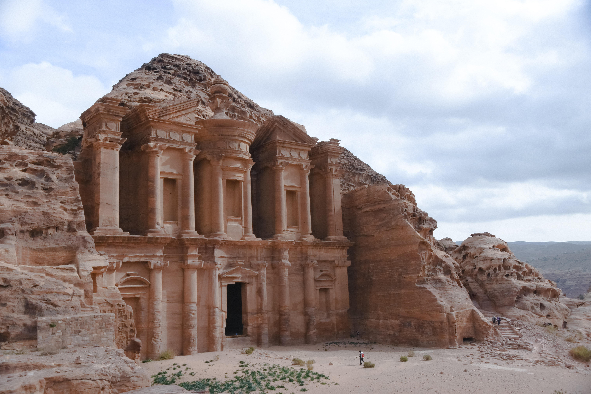
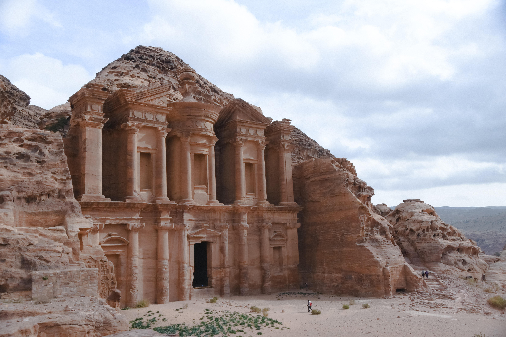

Petra
Orașul de piatră din pustiul Iordaniei
Petra este una din cele 7 minuni ale lumii moderne, un loc unic, care te trimite înapoi în istorie, pe vremea nabateenilor (trib de arabi nomazi) care l-au construit aproape miraculos, săpându-l în întregime în piatră. Petra veche reprezintă o barieră dramatică în munţi cu un colorit diferit, care merge paralel cu Wadi “Araba”.
Dacă continui explorarea orașului antic vei putea admira și următoarele:
Strada cu coloane
În centrul Orașul Petra o stradă colonată conectează astăzi amfiteatrul roman de Templul principal Qasr al-Bint. Este de origine nabateeană și a fost strada principală în perioada de glorie a orașului comercial Petra.
Aceasta a fost recondiționată ulterior în perioada ocupației romane și reconstruită în anul 106 î.Hr. cu o lățime de 6 metri.
Mormintele regale
Mormintele regale au fost sculptate din gresie roșie-trandafir de către nabateeni în urmă cu mai bine de 2.300 de ani și se află în inima orașului antic Petra.
Primul dintre așa-numitele Morminte Regale este Mormântul Urnelor. Acest mormânt este construit pe munte și necesită urcarea mai multor etaje de scări. Abate Starcky a sugerat că acesta este mormântul regelui nabatean Malchus al II-lea, care a murit în anul 70 d.Hr.